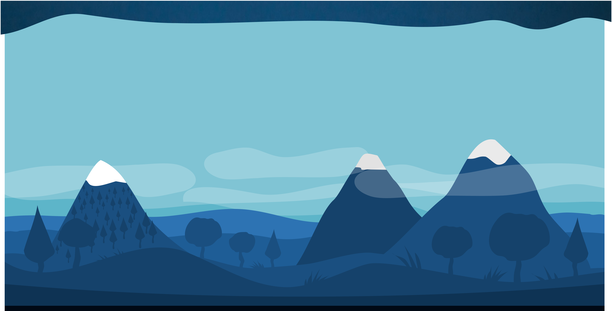
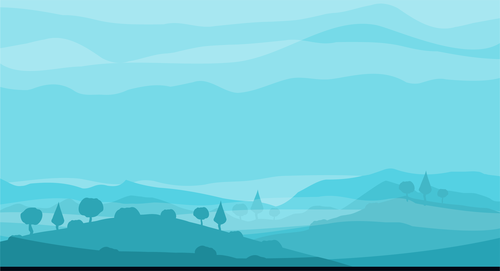
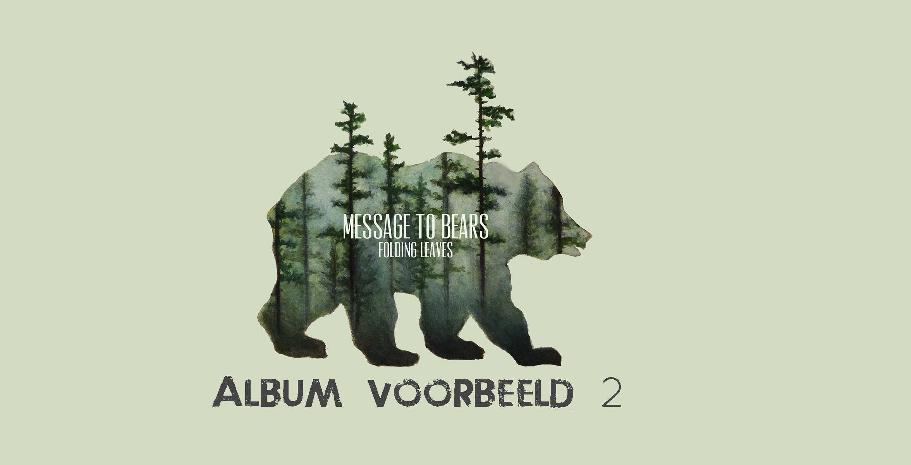
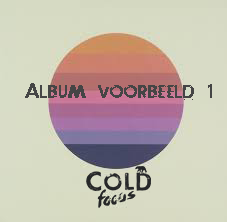
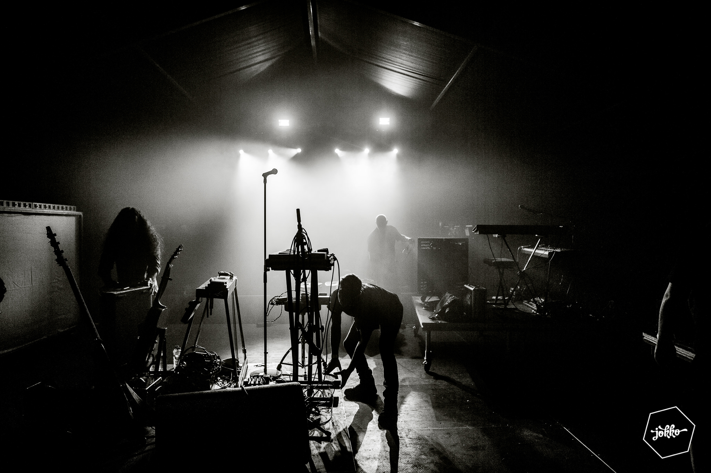
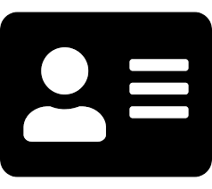

Inleiding
Deze digital styleguide laat zien hoe de huisstijl van Cold Focus op de nieuwe website wordt toegepast.
De richtlijnen en specificaties dienen ter ondersteuning van een eventueel vervolg van deze site, of
een andere grafische toepassing voor de groep. De webstijl zoals gespecificeerd in dit document is gebaseerd
op een logo dat ik in oktober 2017 gemaakt had, voor de fun.
De richtlijnen zijn niet echt "officieel" vastgelegd, maar het is wel belangrijk om een duidelijk idee/schets
mee te hebben van hoe alle grafische toepassingen en ontwerpen rond de band eruit zouden moeten zien.
Het is ook een handig instrument om te waarborgen dat de website voor iedereen werkt en op moderne wijze
is gebouwd.
Verklarende woordenlijst
- Corpsgrootte
De grootte van het gebruikte lettertype. In dit document wordt naast de corpsgrootte soms ook de interlinie
(regelafstand) vermeldt. Bijvoorbeeld 12/18 px.
- #......
Een coderingssysteem voor het definiëren van kleuren op beeldschermen. De code bestaat uit 6 getallen,
cijfers of een combinatie van beiden en wordt vooraf gegaan door #. Oranje is bijvoorbeeld #FF7320.
- Tooltip
Een informatieve tekst, welke verschijnt als de gebruiker de cursor over een item laat gaan.
Gebruikte logo's
In de site is er sprake van verschillende logo’s. Er zijn ook een heleboel iconen, maar hier ga ik later apart
op in. Ten eerste is er het “gewone volledige” logo met de berg en tekst. Online wordt vooral gebruik gemaakt
van het “versimpelde” logo.
Deze versie neemt minder ruimte in op het scherm waardoor extra ruimte voor de content van de pagina wordt
gecreëerd. Het gebruik van het compacte logo voor de website is toegestaan.
Ook het icon/element van de ijsbeer mag apart gebruikt worden, bijvoorbeeld in de navigatiebalk.
Er is geen vaste grootte van het logo vastgesteld, maar er wordt wel geadviseerd om het vertonen op de meest
optimale leesbaarheid voor de bezoekers van de website.
Bijvoorbeeld:
- Logo zonder toevoeging [1] • 228 x 60 px.
- Volledig logo [2] • 228 x 81 px
Het logo als beeldmerk kent (best) een transparante [1] of donkerblauwe kleur (#124c74) als achtergrond.
Kleurenpallet website
Hex: #ffffff
HSL: 0° 0% 0%
RGB:255 255
Hex: #94D869
HSL: 97° 59% 63%
RGB:148 216 105
Hex: #444444
HSL: 0° 0% 27%
RGB:68 68 68
Hex: #707070
HSL: 0° 0% 44%
RGB:112 112 112
Hex:#000000
HSL: 0° 0% 0%
RGB:0 0 0


Navigatie
Header
Binnen de website kan op diverse manieren worden genavigeerd. Maar met het concept van een “single-page applicatie”
dat de gebruiker scrolt van boven naar beneden. De verschillende navigatieknoppen zijn qua opmaak hetzelfde,
maar wanneer er op gelikt wordt, zal de website “sliden” naar de juiste pagina.
Specificaties
- Maak bondige kopjes (met een +-teken ertussen)
- Algemene terminologie (benaming pagina’s).
- 40 px hoog. • Quicksand, light, 33 pt, #FFFFF
- Links naar sociale media adhv van de iconen

!!!!!!! afwerken
+
+
+
+
Footer
Specificaties
- “Ijsbeer-icoontje”
- Herhaling van de navigatiebalk (dus 40 px hoog. • Quicksand, light, 33 pt, #FFFFF)
- Links naar sociale media adhv van de iconen zoals in de navigatie-balk
Typografie !!!!!
- Navigatie-balk
Music + video & photo + concerts + Bio/ contact + store
Quicksand, light, 33 pt, #FFFFF
- Tussentitels
Music
Quicksand, regular, 48 pt, #ffffff
- Tekst bij pagina: albums
Trust Yourself To The Water (2016)
Quicksand, regular, 30 pt, #444444
- Tekst knoppen
Buy on Itunes
Quicksand, bold, 22 pt, #ffffff
- Tekst foto-pagina
Festival C
Quicksand, regular, 20 pt, #ffffff of #444444
- Tekst Concerts
Fri 22-06-18 19U// Brandweerfeesten// Zandhoven
Quicksand, regular, 26 pt, #ffffff
- Tekst Bio & contact
Management
Quicksand, bold, 28 pt, #444444
Back in september 2017, Cold Focus was founded....
Quicksand, light, 22 pt
Vormen en achtergrond
Binnen de website worden vectors als achtergrond gebruikt voor het creëren van een bepaalde sfeer.
De vector hebben in principe geen inhoudelijke functie, maar brengen wel een aangename achtergrond.
Specificaties
- Scherpe beelden
- Rustige achtergrond
- Kleur in de vorm van het kleurenpallet


40 x 35 px ; #15426B OF #1D8A99
Knoppen
Knoppen "BUY ON ITUNES" Pre-order en TICKETS en more info
Afbeeldingen

Specs: 445 x 217 px

Specs: 211 x 211 px

Specs: 215 x 211 px

Specs: 1995 x 450px
Iconen
De media iconen worden gebruikt overheen de pagina. (Ook om een nieuwe pagina aan te geven)
Specificaties:
#ffffff
Main iconen:

-
Ijsbeer icon | 108x57 px

-
Music icon | 62x67 px
-
Camera icon | 72x62 px

-
Flag icon | 72x64 px

-
Contact icon | 76x59 px
-
Store icon | 87x72 px
Additional iconen:

-
Spotify icon | 23 x 23 px

-
Instagram icon | 23 x 23 px

-
Facebook icon | 23 x 23 px
-
YouTube-logo-play icon | 23 x 23 px

-
play video or music - icon | 15 x 17 px
-
Share icon | 34 x 34 px

-
Volume icon | 18 x 17 px

-
Share icon | 28 x 28 px

-
Reload icon | 21 x 21 px
-
Fullscreen icon | 3 x 23 px

-
Go top icon | 33 x 33 px